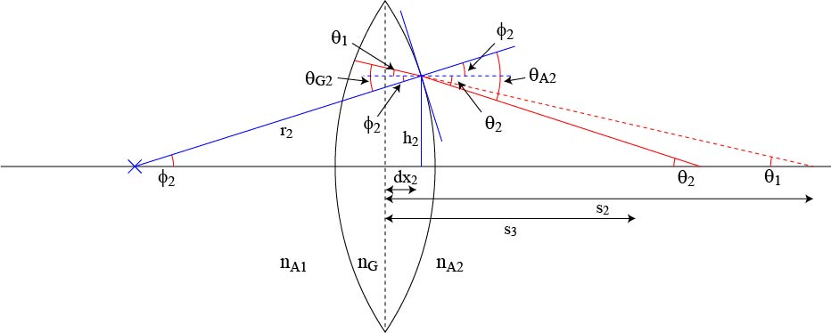
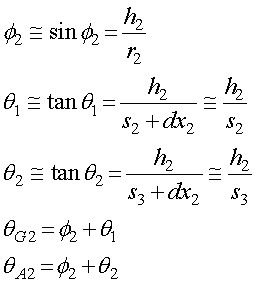
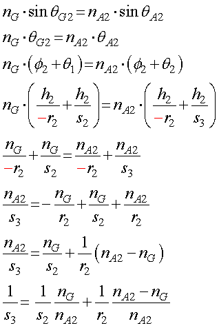
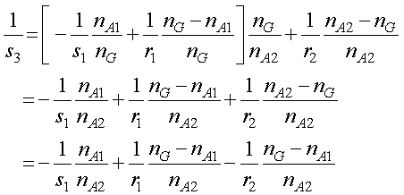
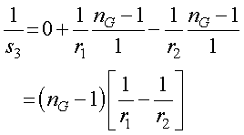

レンズ右側での屈折は，．

まずは，それぞれの記号の説明をしましょう．
φ2 ： 光線がレンズ左側に当たった場所の曲率半径の軸に対する角度
ｒ2 ： 曲率回転半径
ｈ2 ： そのときの高さ
ｄｘ2 ： そのときのレンズ中心からのずれ
θ１ ： レンズ右側で屈折しない光線が軸と交わる点での角度
θ2 ： レンズ右側で屈折した光線が軸と交わる点での角度
ｓ２ ： 屈折した光線が軸と交わる点の距離
θG2 ： レンズからの入射角
θA2 ： レンズ右側での屈折角
です．
幾何学的な関係は，

となります．
屈折の関係から，

とs3を求めることができました．ここでもまたｒ２がマイナスの符号となっていることに注意してください．
次に，s2に前ページで導出した式を代入して，

を得ることができます．
もし，入射光が平行光なら，s1，が無限大となるので，右辺第一項が０となり，さらに，A1，A2が空気なら，nA1=nA2=1，となるので，

と，ここ，で求めた式と一致します．